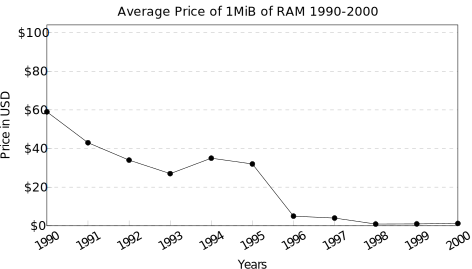

Regrettably, there is little to read about the hardware invented around 1996 to improve 3D rendering and in particular id Software's ground-breaking title. Within the architecture and design of these pieces of silicon lies the story of a technological duel between Rendition's V1000 and 3dfx Interactive's Voodoo.
With the release of vQuake in early December 1996, Rendition seemed to have taken the advantage. The V1000 was the first card able to run Quake with an hardware acceleration claiming a 25 Mpixel/s fill-rate[1] . Just in time for Christmas, the marketing coup allowed players to run the game at a higher resolution with a higher framerate and 16-bit colors[2]. But as history would have it, a flaw in the design of the Vérité 1000 was to be deadly for the innovative company.
The idea of having hardware dedicated to accelerating graphics did not happen overnight. As early as 1954, United Airlines had flight simulators to train their pilots. A major player in the field, Silicon Graphics, Inc. (SGI)'s had been around since 1982 and offered at the time powerful workstation such as the Indy, the O2, and the Indigo². The pricetag of these machines however kept them out of hand from regular consumers (a 1996 SGI Infinite Reality pricetag would range from $99,900 to $634,900[3], the equivalent of $160,945-$1,022,864 in 2019). What happened in the late 90s was a combination of three factors.
First, the price of RAM dropped significantly. Even though the mid-90s suffered the great RAM shortage of 1995 (mostly due to Microsoft Windows 95 recommending 8 MiB for their OS), the price of RAM fell by almost 90% over a year. This opened the door to a card with mind-blowing high-resolution framebuffers (640x480, 16-bit RGB color) and able to store textures locally.
Second, the performance of RAM improved. FastPage RAM had been a step up over DRAM but with the release of EDO RAM, latency dropped 30% with a RAM driving 50-ns[4] access time.
The third and last piece of the puzzle came under the form of killer apps. PCs had powerful CPUs like the Intel Pentium running at up to 166-Mhz which game developers leveraged to produce AAA 3D games. In 1996, the two titles everybody talked about were Tomb Raider by Core Design and Quake by id Software.
Rendition Inc, was founded in 1993. Two years later, in 1995, they announced the V1000 architecture which was promptly licensed by four OEMs. The Creative Labs 3D Blaster PCI, the Sierra Screamin' 3D, the Canopus Total 3D, and the Intergraph Reactor were the first to the market followed shortly after by MiRO.
Notice how the initial V1000-E chip was later replaced by the V1000L-P, a version drawing less power and 20% faster[5].
The name of the cards changed but the chips found on them were similar. The only real leverage OEMs had to balance price versus performance was the quality of the RAM on-board.
A V1000 has two essential properties which are important to notice since the 3dfx Voodoo (which will be studied later) took a radically different approach.
First, the card was meant as a replacement of whatever the customer had already installed. The chip supported both VGA 2D and 3D drawing, with an impressive 3D-in-a-window mode via context switches. As a result, the card had a single output VGA port
The second characteristic is the "big iron" architecture based on a lone Mips CPU accessing an unified 4MiB. The 64-bit data bus between them had no particular properties. This generic design made the card easily programmable via microcode uploaded upon startup (this made it the very first PC GPU, long before Nvidia coined the term.)
The SDK[6] came with a set of headers to interface with the C language (RRedline on Windows and Speedy3D on DOS). Drawing a textured triangle was similar to what Vulkan has to offer today with manual VRAM management. Capable of rendering perspective correct textured triangles, the API also supported alpha tests, alpha blending, and fog.
#include <string.h> #include <windows.h> #include <redline.h> WinMain(HINSTANCE instance, HINSTANCE prevInstance, LPSTR cmdLine, int cmdShow){ int WIDTH=640, HEIGHT = 480; HWND hWndMain = ... ; // Setup Verite board and resolution/refresh rate v_handle verite; VL_OpenVerite(hWndMain, &verite); V_SetDisplayType(verite, V_FULLSCREEN_APP); V_SetDisplayMode(verite, WIDTH, HEIGHT, 16, 75); // Copy texture to VRAM bmp_info bmp = loadBMP("data\\rlogo.bmp"); v_memory memObj = V_AllocLockedMem(verite, bmp.linebytes*bmp.height); memcpy(V_GetMemoryObjectAddress(memObj), bmp.addr, bmp.linebytes*bmp.height); v_surface *display, *texture; VL_CreateSurface(verite, &display, V_SURFACE_PRIMARY, 2, V_PIXFMT_565, WIDTH, HEIGHT); VL_CreateSurface(verite, &texture, 0, 1, V_PIXFMT_565, bmp.width, bmp.height); v_cmdbuffer cmdbuffer = V_CreateCmdBuffer(verite, 0, 0); VL_LoadBuffer(&cmdbuffer, texture, 0, bmp.linebytes, bmp.width, bmp.height, memObj, 0); VL_InstallDstBuffer(&cmdbuffer, display); VL_InstallTextureMap(&cmdbuffer, texture); VL_SetSrcFunc(&cmdbuffer, V_SRCFUNC_REPLACE) // Clear screen to black VL_FillBuffer(&cmdbuffer, display, 1, 0, 0, display->width, display->height,0); // Populate cmd with triangle coo and textCoo v_kaxyzuvq vertex[3] = ... ; VL_Triangle(&cmdbuffer, V_FIFO_KAXYZUVQ, &vertex[0], &vertex[1], &vertex[2]); V_IssueCmdBuffer(verite, cmdbuffer); VL_SwapDisplaySurface(&cmdbuffer, display); }
Behind the scene, RRedline took care of loading the Vérité with 128-KiB of micro-code and translated C calls to V1000 assembly functions calls.
Trivia: The name of the API "RRedline" was a play on "Rendition Ready" likely decided by a committee. Speedy3D however was Walt Donovan's idea.
The v1000 was basically just a slow CPU (25MHz) that had a 1-clock 32*32 multiply (which took up a significant fraction of the chip!), a 1 clock approximate reciprocal instruction (so a 2 clock approximate integer divide), and the usual set of RISC instructions. Oh, and one more thing - a "bilinear load" instruction which effectively read a 2x2 block of linear memory and performed a bilinear filtering based on the u and v fraction passed in the instruction. There was a tiny cache, I believe it was just 4 pixels. So if you had overlapping 2x2's you'd get a reduction in memory bandwidth, but not if the 2x2's didn't overlap.
There was no hardware support for Z buffers. So the software that ran on the v1000 had to read Z, do the compare, then decide to write or not.
- Walt Donovan (Algorithm Architect)
To send textures and microcode to the card, the driver used DMA to transfer data across the PCI without involving the CPU. In practice, many motherboards did not implement bus mastering properly and games had to fallback to PCI FIFO mode which was detrimental to performances[7]. Internally, all operations were carried via 32-bit fixed-point integers.
Rendition took the approach of being fully programmable, but didn't have any kind of clever pipelining or fast clocks. So, if it took 25 instructions to write a pixel, then you would get only 1 megapixel/sec. With fixed function hardware, you can pipeline the equivalent of these 25 instructions, and get 25 megapixel/sec. 3dfx's people came from SGI, and they took the approach that the right solution was to build a fixed function triangle engine in hardware, with a bunch of knobs that was a subset of OpenGL functionality. The designers of the V1000 came from a very different background, had no knowledge of OpenGL, and decided that the right approach was to build a CPU.
- Walt Donovan (Algorithm Architect)
On top of the list of features, the card also had an innovative anti-aliasing system which was not without a funny side-effect.
The antialiasing algorithm used in vquake is patented (#6005580.) There's a funny joke about that AA algorithm. It worked on triangles, not spans. Now quake had this concept of "perfect z-buffering" where things were broken up into spans and visibility sorting done using the BSP/PVS. So you ended up with a bunch of spans that covered the screen perfectly without overlap or missing pixels, and which only required a single write (no z buffering!) to display memory. However, the starting data for these spans were in fact triangles. The AA algorithm looked for silhouette edges, and then antialiased them. (See humus.name, Geometric Post-Process antialiasing, around March 2011 for a lot more info on the idea -- he rediscovered it!) But since this was done after the screen was rendered (all the spans were rendered), the algorithm had no idea if the edge was actually visible or not. It just drew them anyway. (If there had been a z-buffer, then only visible edges would have been overdrawn!) In practice, that did not turn out to be a problem since the BSP tended to cull non-visible triangles very well.
But not the character models! So vquake allowed you to see people hiding behind doors and walls, with a very slight and moving disturbance in the texture!
- Walt Donovan (Algorithm Architect)
Several good games were supported upon release. Descent II, Grand Prix Legends, IndyCar Racing II, Myst, Nascar Racing, EF2000, and Tomb Raider were all "nice to have" but the real crown jewel, the most power hungry and the one driving sales, was Quake. id Software's title was treated to a dedicated Vérité port called vQuake released on December 2, 1996. It was done by Walt Donovan and Stefan Podell from Vérité in direct collaboration with Michael Abrash from id Software.
It was tedious work but it worked. A Pentium 166Mhz able to render Quake in 320x200 at 26 frames per second was able to jump to 640x480 with bilinear filtering/anti-aliasing enabled and still render at 22 frames per second[9]. In practice, players used a resolution of 512x384 which was visually pleasing and allowed 32 frames per second on a P166-Mhz. For a short period of time, vQuake was unarguably the best way to enjoy Quake.
Many thanks to user @swaaye from vogons.org forum for providing V1000 screenshots and to Fruit Of the Dojo for their high-quality, easy-hackable MacOSX port of Quake[10].
What handicaped the V1000 (and indirectly its successor the V2200) was its lack of a hardware-accelerated z-buffer. As soon as a developer enabled depth-test, the fill-rate dropped to 12.5Mpixel/s and framerate was halved. As Stephan Podell would later explain[11], vQuake (and all other games) had been banged into the V1000 by reading the z-buffer as little as possible.
Developers found out that the only way to ship was to have the CPU do most of the work. In the case of vQuake, that meant using the card as a super fast horizontal span renderer which always wrote to the z-buffer but only performed z-read-compare when rendering enemies. Even though good products shipped, the consequences of these design "choices" would be far reaching.
id Software released GLQuake on January 22, 1997. Implemented using miniGL (a subset of OpenGL 1.0 standard without GL_LIGHT and GL_FOG among other things), the binary opened the door to all hardware-accelerated PC cards. 3dfx Interactive's Voodoo cards particularly stood out in this exercise, their mind-blowing figures (41fps in 512x384 16-bit colors on a P166[12]) becoming the de-facto benchmark of 3D acceleration. The V1000's 25 MPixels/second fillrate which once compared favorably against Pentium software rendering now appeared average faced with the 50 Mpixels/second of a Voodoo which was not even affected by z-testing.
Rendition's answer came with the more powerful V2x00 which paradoxically made things worse. Advertised as twice as fast with hardware z-buffer, the V2x00 failed to improve vQuake framerate. This anomaly eroded customers trust and reflected poorly on vQuake developer Stefan Podell who felt compelled to explain why vQuake was CPU bound instead of GPU bound[13].
... with my reputation tarnished by VQuake and VHexen2 not going any faster on the V2x00, I'm here to explain why this is the case.
[...]
Walt and Michael decided that since the Verite 1000 wasn't terribly good at Z-buffered pixels, that if we let the Pentium take care of this span sorting, we could reduce the number of pixels the Verite would draw. Furthermore, we'd be able to turn off the Z compare function on the Verite.
[...]
... no matter the Verite chip, the CPU will be very busy.
- Stefan Podell
Moreover, there were significant hardware design issues which originally bricked[14] the V2x00. It tooks months to fix the problem and even then the board still ran at 50Mhz while the NVidia NV3 and the Voodoo2 already pushed 100Mhz.
A third generation based on a V3300 could have changed the course of history but it came too late. The project was canceled in 1998 after Rendition was purchased by Micron Technology.
We did many things wrong at Rendition. We would have delivered the v1000 months earlier (and would have had zero competition for months) had we just done the layout in house instead of farming it out to the fab. And the chip's QA was questionable. We had one guy who spent months trying to get mpeg decompression working using V1000 assembly language, and could never get it to work because the chip was so randomly buggy.
The only reason vquake worked well in practice was that the v1000 wasn't doing all that much. "Render this list of spans", "antialias this edge", that's pretty much it. Mike Abrash and I spent way too much time meshing quake with the V1000, and it was just not a feasible model going forward.
- Walt Donovan (Algorithm Architect)
After the demise of Rendition, 3dfx's doubled down with a Voodoo2 whose outstanding performances pulverized competition. The king of PC 3D ruled the world for a moment. The game eventually resumed with new challengers entering the arena, among them ATI from Canada and a relatively unknown company at the time called Nvidia.
{kind=link}